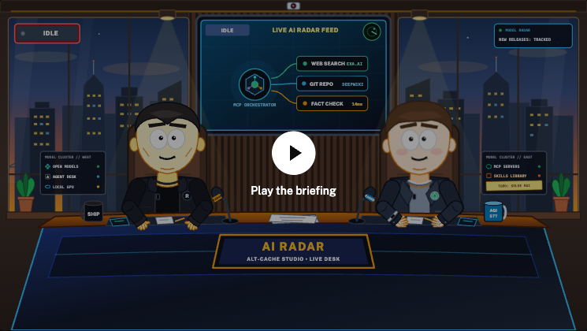

Navy from the studio, amber for what you press and what is on air.
The same studio, colours and type as today. What changes is the order: the show comes first, there is one way to ask the desk, and the technical parts move to one "How it works" panel. Yellow numbers point to the notes under each frame. The headlines are real ones from today's feed.
Desktop, 1440 × 900: the first screen
1
AI Radar
Live AI news read by two anchors, who also answer your questions.
Find models, tools, prompts…
2

3
Introducing Gemini 4 NeonRead by Theo · Google DeepMind · 1 day ago
All AI · 279 live stories this week · the editor keeps real news and drops adverts
Introducing Gemini 4 NeonGoogle's new model, from the lab's own blog.Google DeepMind1 dAsk
Kiroween 2026: an AI hackathon opens on Devpost$100,000 in prizes, 14 days left to enter.DevpostopenAsk
rust anything: a new open-source project on GitHubRewrite a whole app in Rust, one piece at a time.GitHub4 dAsk
clairic: a free demo trending on Hugging FaceRuns in the browser, 29 likes this week.Hugging Face1 dAsk
8
Closing soon
Competitions and hackathons
University Blockchain Conference Hackathon$22,000 in prizes · 497 registeredToday
Bridge The Gap Hacks123 registered1 d
Open Agentic Web ChallengeCognizant, Mozilla and MIT NANDAJan 11
Prompts to copy
From the library
A system prompt for a grounded assistantCopy
Make an agent plan before it actsCopy
1
One sentence says what this is. The four numbers above the title (180, 9, 16, 11) move down to the feed, where they mean something.
2
The studio takes two thirds of the width. Today it is about a third, and the panel next to it competes with it.
3
One "On air" bar under the TV: what is playing, who reads it, the source, and the three buttons. It replaces the panel with six buttons, the channel numbers and the cast list.
4
One row of channels tunes the TV and filters the feed below together. Today there are two separate sets.
5
One way to ask: the desk sits next to the TV. "Ping the desk", "Check a claim", "Explain a repo" and "Ask about this story" become the chips inside it.
6
All the technical parts behind one link (the panel is drawn below). Judges see it in one tidy place; visitors are not confused by it.
7
The feed follows the channel, with one action per row ("Ask"). "Brief" goes away: the TV is the brief.
8
Closing soon and Prompts stay in a narrow column. The radar chart goes: the channel row does its job.
"How it works": the panel that opens from the desk
The agents
Six agents share the work: the desk, the scanner, the fact checker, the researcher, the repo guide and the script writer.
Exa, Hugging Face, DeepWiki and Context7. The desk asks before it uses one.
☐ Let them use these without asking each time
The newsroom
57 sources, an AI editor that keeps real news, and a writer that scripts the anchors once for every viewer. Every number is checked against its story.
The AI model
This site provides a free allowance of AI. To use your own account, add your key here.
11 website actions connected
Phone, 375 wide
AI Radar
Live AI news read by two anchors, who also answer your questions.
A
Introducing Gemini 4 NeonRead by Theo · Google DeepMind
B
01All02Models03Local›
C
Call the desk
Ask Theo or Dex anything about AI tools and news.
About this storyExplain a repo
Ask Theo or Dex…
On this channel
Kiroween 2026: an AI hackathon opensDevpost · openAsk
RadarFindPromptsEventsSources
A
The studio first, right under the title. The four header numbers no longer push it down.
B
Play, Next and Sound sit right under the TV. Today they are far below the chat, so someone who presses Play has to scroll to find them.
C
Then the desk, then the feed. The chat opens full screen when the visitor starts typing.
What leaves the first screen
Duplicate buttons: "Ping the desk", the right panel's six buttons, "Brief" and "Ask desk" on every row become the desk and one "Ask" per row.
Technical text: "11 website actions connected", the agent names in code type, "Standing by", the free-allowance line and the research checkbox move to "How it works".
Repeated numbers: Channel, Live items, Aired and Last scan (now part of the feed's subtitle and the On air bar).
The radar chart (the channel row does the same job).